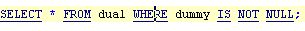
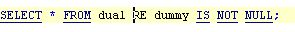

Edit -> Delete Word Back
Previous
Top
Next
Delete text from current position until begining of current word.
For example, current position is in the middle of "WERE" :

"Delete Word Back" gives :

See
Edit Menu